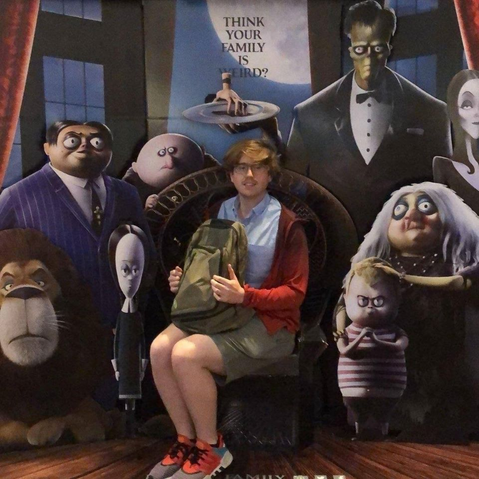

About Me
Ian Erickson, who appears as himself, makes his web-development website debut with this "Space Jam" inspired portfolio. Widely considered a favorite in his class, Ian has parlayed an amazing Northwestern University full stack wed web-development certificate into an incredible opportunity for potential employers and companies alike. Hiring Ian Erickson to work for you or on your next project would be a real "slam dunk".
During his schooling, Ian often stood out from many of his peers with his design and aesthetic when it came to many of the front end-choices for his projects, while also taking up important backend and server-related roles, primarily for the Take-2 movie app and the Atlas-Video app.
Ian's passion for creativity, logic, and design is evident in all of his work, so why don't you take a look at the projects or his resume?
WAYNE KNIGHT (Stan Podolak) is probably best known for his role in the blockbuster "Jurassic Park," as well as for his recurring part as Newman, Jerry Seinfeld's postal carrier neighbor on the hit NBC series "Seinfeld." However, his career encompasses a long list of film, television and stage appearances.
Knight made his motion picture debut in "Dirty Dancing" and has since appeared in such films as "Betrayed," "Everybody's All American," "Born On the Fourth of July," "Dead Again," "JFK," "V.I. Warshawski," "Basic Instinct" and "To Die For."
He has appeared off-Broadway in Shakespeare's "Measure For Measure" and in Broadway productions of "Gemini" and "Mastergate."
In addition to his role on "Seinfeld," Knight also appeared in the pilot for "Middleman" for NBC.